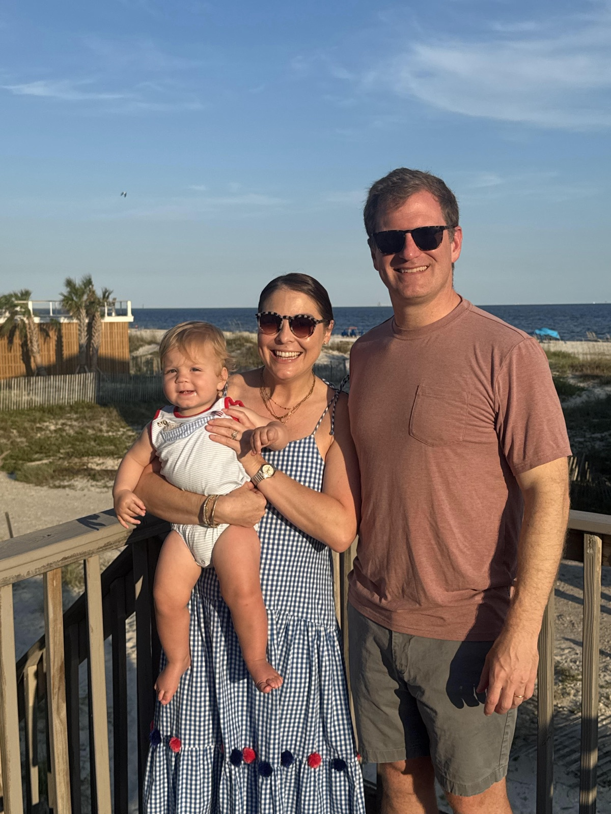

The Frost family knew they wanted to grow their family, but due to their unfortunate circumstances, were unsure that they could safely do so.
Three years ago, they lost their infant son in the NICU due to an unexplained lung disease. His genome had been sequenced. Clinical lab specialists reviewed the results. The case was eventually referred to one of the world’s leading experts in rare developmental lung disorders. Sadly, the answers they were searching for never came.
Without a diagnosis, the parents had no way of knowing whether their son’s illness had been a random, singular tragedy or something hidden within their own DNA that could happen again.
They turned to IVF, hoping genetic testing could reduce that risk, but without a known mutation to test for, the best decision they could make was with incomplete information.
Gamow Labs reanalyzed the family's genome using an experimental AI system. This time, we found the answer.
Genome sequencing often represents hope.
Today, patients in the NICU that are critically ill can have their entire genome sequenced in a matter of days. But translating the three billion letters into an explanation for why a child is suffering, and giving families actionable information, remains out of reach for many.
Genome interpretation requires resources that not all NICUs have. A baby born in a lower-level unit may need a formal consult, a telehealth referral, or a transfer to another hospital before the right specialist ever sees them.
With the right team in place, interpretation takes time, and manual reviews can fail to diagnose. A 2023 study of the country's top-tier NICU network found that even those best-resourced hospitals often couldn't get comprehensive genetic testing back fast enough to shape urgent treatment decisions.
The science is also constantly evolving. Every month, researchers discover new disease genes, classify new variants, and publish new papers. These discoveries rarely make their way back to patients whose resolution had been inconclusive years prior.
All of these factors culminate in families not having answers when they need them.
At Gamow Labs, our hypothesis is straightforward: properly designed AI agents can help clinicians interpret genomes faster, more consistently, and at a scale that would be impossible through manual review alone.
We are not in the business of replacing geneticists. We want to make expert-level genomic interpretation available to every family, regardless of where they receive care.
To test whether that vision could work in practice, we partnered with Dr. Pawel Stankiewicz at Baylor College of Medicine, one of the world's leading experts in developmental lung disorders.
In a blinded study, his team provided deidentified whole genome sequences from 26 infants with interstitial lung disease whose diagnoses had been missed by first-line clinical laboratories and were then escalated to Dr. Stankiewicz. Dr. Stankiewicz’s lab subsequently solved 19/26, leaving 7 as mysteries.
“These are some of the most challenging cases in genomic medicine,” said Dr. Stankiewicz. “The patients had already undergone genome sequencing and clinical review, yet their diagnoses remained elusive. Solving these cases often requires looking beyond the standard ways of analyzing a genome and considering evidence from across the genome and the scientific literature.”
We first evaluated whether today's general-purpose AI models could help tackle these exceptionally difficult cases. Like researchers at Boston Children's Hospital and OpenAI, we found that they could. ChatGPT-5.5 Pro independently recovered many diagnoses that had previously escaped routine clinical workflows, correctly identifying 16 of the 26 cases, substantially outperforming standard clinical pipelines on this challenging cohort.
George-0.1, our AI-native interpretation pipeline, breaks genome interpretation into the same sequence of investigative steps an experienced clinical geneticist would perform. Specialized agents examine different forms of evidence, search the literature, and assemble a diagnosis supported by traceable evidence.
Using this approach, George-0.1 exceeded the performance of Dr. Stankiewicz’s lab, reproducing the molecular diagnosis of all 19 cases while contributing 2 additional solutions that nobody had ever solved. The Frost family's son was one of those two.
We found clusters of discordant read pairs along with split reads spanning the predicted breakpoint junctions, suggesting a balanced translocation in Baby Frost’s genome: a rearrangement in which a piece of DNA breaks off and reattaches somewhere else. In this case, this rearrangement would separate the FOXF1 enhancer from the FOXF1 gene, which would reduce FOXF1 expression to a lethal level and support the previous diagnosis of alveolar capillary dysplasia (ACD), a rare developmental disorder that prevents a newborn's lungs from supplying oxygen to the body.
Because this kind of evidence can be artifactual in short-read whole genome sequencing, this hypothesis was confirmed with Sanger sequencing in Dr. Stankiewicz’s lab. After confirmation, the case was considered solved.
After validating our findings, Dr. Stankiewicz shared, “I think the most exciting possibility is that tools like this could give clinicians a faster path to genomic interpretation. For critically ill newborns, time matters. Access to our expertise can be limited. So having that capability available at scale could be a major shift for neonatal medicine.”
Finally, we were able to give the Frost family a molecular explanation for what had happened to their son.

“This information was an incredible gift,” said Randall Frost. “It didn’t undo our loss, but it gave my wife and I closure and the confidence to move forward in growing our family.”
We hope that delivering answers to the Frost family is just the beginning. Previous work has shown that re-analysis like this consistently reveals new diagnoses due to better tools, models, and science and scaled AI-based approaches make this easier than ever before.